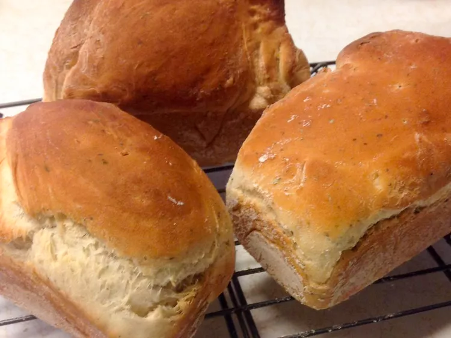

Pan

Description
El mejor pan de masa madre!
Ingredients
Harina
Agua
Sal
Steps
Mezclar la harina con el agua y dejar 48 hrs
Utilizar 350 gr de harina con la masa madre
Amasar
Dejar reposar 24 hrs en la heladera
Cocinar a 180 º
Dejar enfriar y cortar